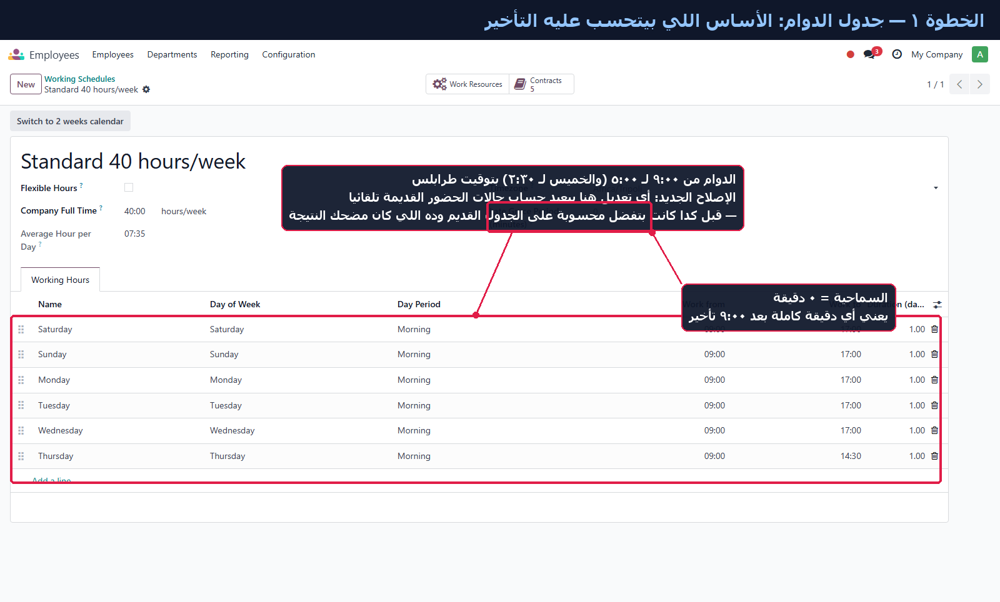
The employee working schedule is the baseline for attendance status: changing hours or the grace period automatically re-evaluates already-imported punches.
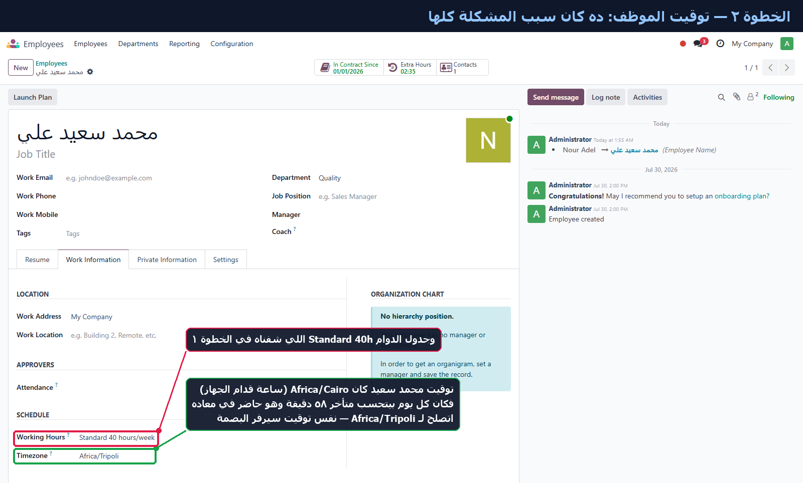
Each employee carries a working schedule and a timezone — punches are always evaluated in the right timezone, so a mismatched device clock never produces fake "Late In" records.
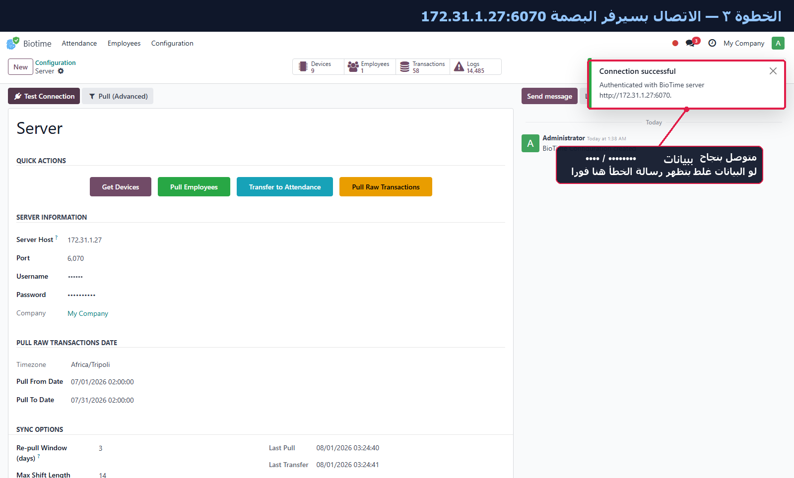
Server configuration with one-click Test Connection and quick actions (Devices → Employees → Transactions → Attendance), live counters, re-pull overlap window and max shift length options.
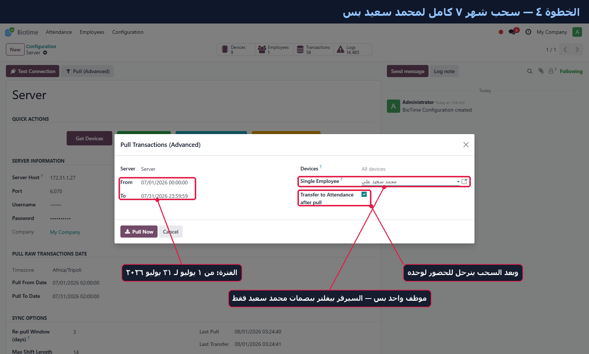
Pull Transactions (Advanced) wizard: pick a date range, filter by device or a single employee, and optionally transfer straight to attendance after the pull.
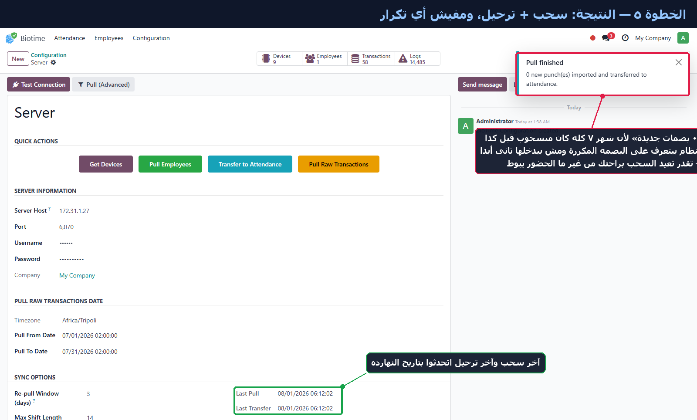
Pull + transfer in one step, fully idempotent: re-pulling an already-synced period imports 0 duplicates — punches are deduplicated by BioTime id, so you can safely re-run anytime.
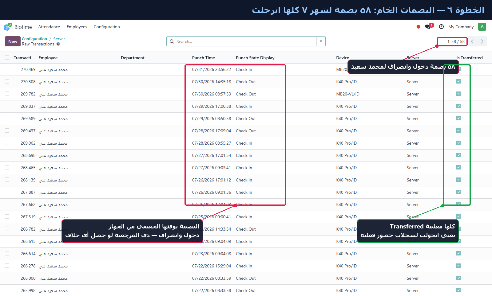
Raw transactions: every punch is stored with its real device time, check in/out state, source device and server — the "Is Transferred" flag shows which punches made it into an attendance.
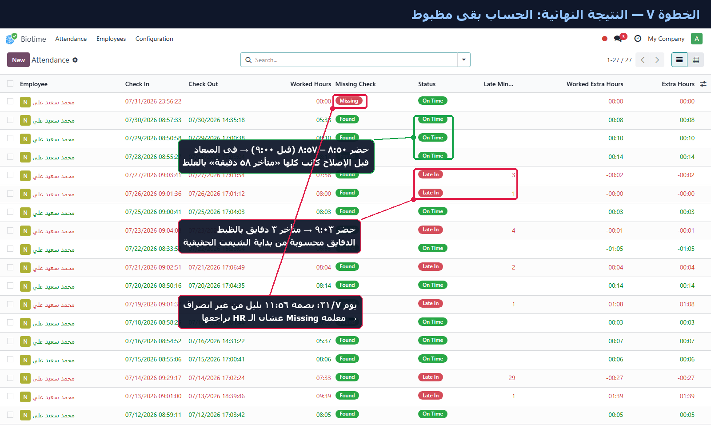
Transfer to Attendance builds hr.attendance with Late In / On Time status and exact late minutes counted from the real shift start, flags missing checkouts for HR review, and keeps night shifts as one record across midnight.
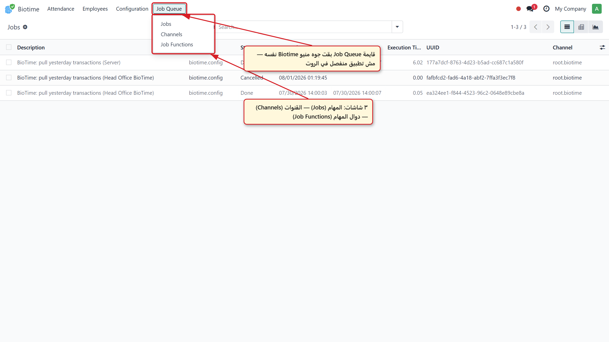
Built-in background Job Queue — fully embedded in the module, no external queue_job addon needed. The Job Queue menu lives inside the Biotime app: Jobs, Channels and Job Functions.
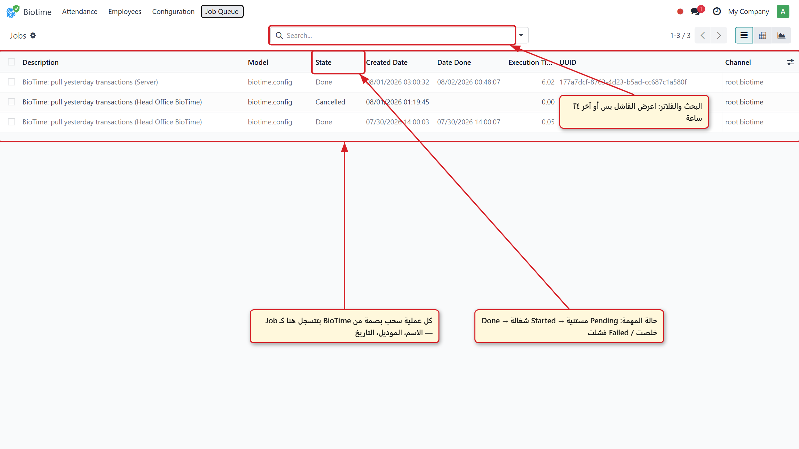
Every nightly BioTime pull runs as a background job: one row per server with its state (Pending → Started → Done / Failed), execution time and channel — the UI never freezes during a pull.
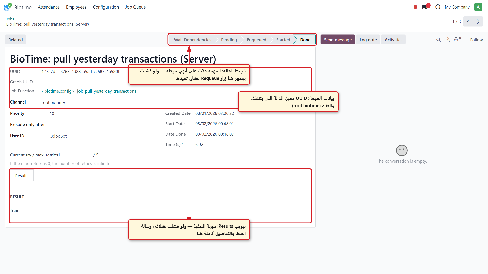
Job detail: status bar with the full lifecycle, UUID, function and channel, retry counter and a Results tab — failed jobs show the complete error trace and a one-click Requeue button.
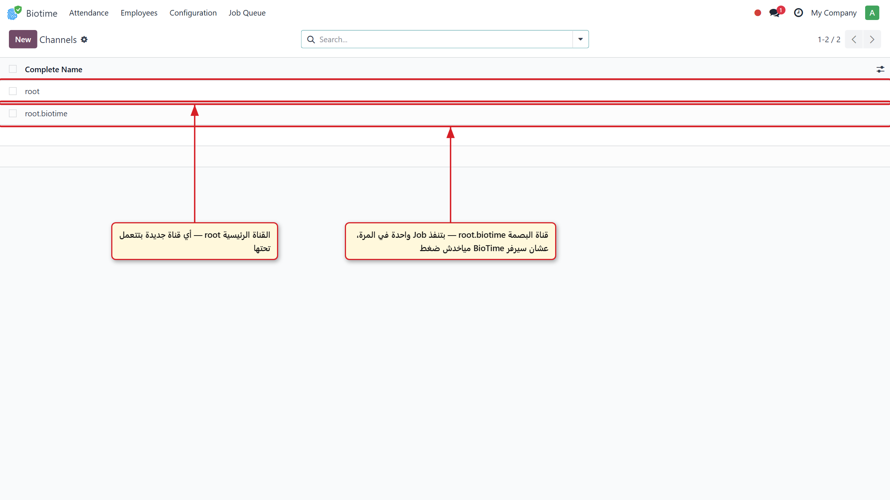
Dedicated root.biotime channel runs one job at a time, so the BioTime server is never hammered by parallel pulls.
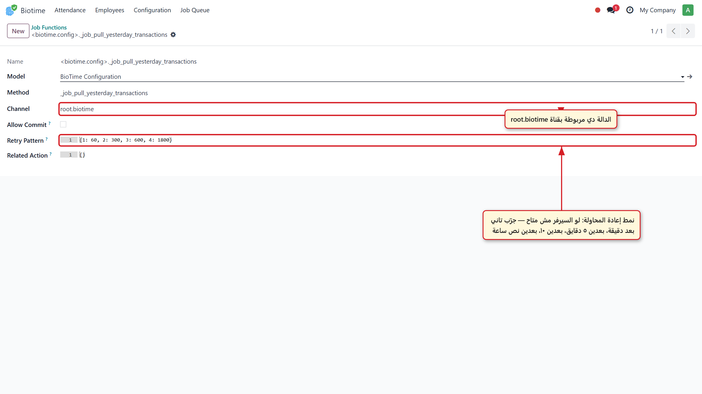
Automatic retries: if the BioTime server is unreachable the pull retries after 1, 5, 10 and 30 minutes — configurable per job function.